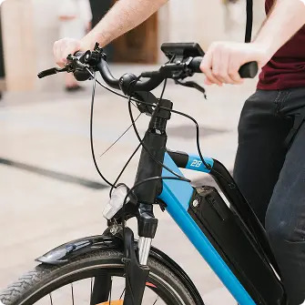

<section id="about" class="about section">
  <div class="container about-section-wrapper">
    <div class="about-content">
      <svg class="about-icon" width="48" height="48">
        <use href="../img/icons.svg#electric-bike-icon"></use>
      </svg>
      <h2 class="about-title section-title">
        Meet E-Bike Nova: The Future of Eco-Friendly Urban Transportation
      </h2>
      <p class="about-text">
        E-Bike Nova represents a breakthrough in electric bicycle design,
        merging cutting-edge technology with sleek aesthetics. Our mission is to
        redefine urban commuting by providing a lightweight, high-performance
        ride that prioritizes sustainability and user experience.
      </p>
    </div>
    <picture>
      <!-- desktop -->
      <source
        type="image/avif"
        media="(min-width: 1440px)"
        srcset="
          ../img/about/cyclist-riding-desktop.avif    1x,
          ../img/about/cyclist-riding-desktop@2x.avif 2x
        "
      />
      <source
        type="image/webp"
        media="(min-width: 1440px)"
        srcset="
          ../img/about/cyclist-riding-desktop.webp    1x,
          ../img/about/cyclist-riding-desktop@2x.webp 2x
        "
      />
      <source
        type="image/jpeg"
        media="(min-width: 1440px)"
        srcset="
          ../img/about/cyclist-riding-desktop.jpg    1x,
          ../img/about/cyclist-riding-desktop@2x.jpg 2x
        "
      />
      <!-- tablet -->
      <source
        type="image/avif"
        media="(min-width: 768px)"
        srcset="
          ../img/about/cyclist-riding-tablet.avif    1x,
          ../img/about/cyclist-riding-tablet@2x.avif 2x
        "
      />
      <source
        type="image/webp"
        media="(min-width: 768px)"
        srcset="
          ../img/about/cyclist-riding-tablet.webp    1x,
          ../img/about/cyclist-riding-tablet@2x.webp 2x
        "
      />
      <source
        type="image/jpeg"
        media="(min-width: 768px)"
        srcset="
          ../img/about/cyclist-riding-tablet.jpg    1x,
          ../img/about/cyclist-riding-tablet@2x.jpg 2x
        "
      />
      <!-- mobile -->
      <source
        type="image/avif"
        srcset="
          ../img/about/cyclist-riding-mobile.avif    1x,
          ../img/about/cyclist-riding-mobile@2x.avif 2x
        "
      />
      <source
        type="image/webp"
        srcset="
          ../img/about/cyclist-riding-mobile.webp    1x,
          ../img/about/cyclist-riding-mobile@2x.webp 2x
        "
      />
      
    </picture>
  </div>
</section>
